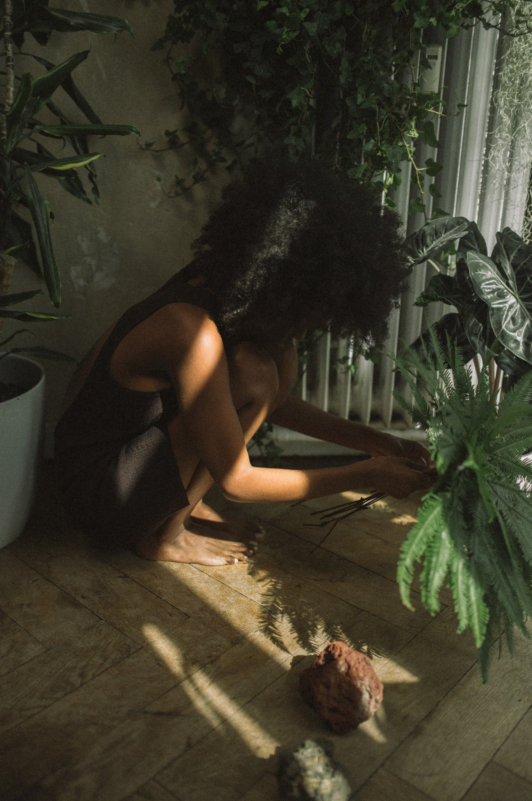
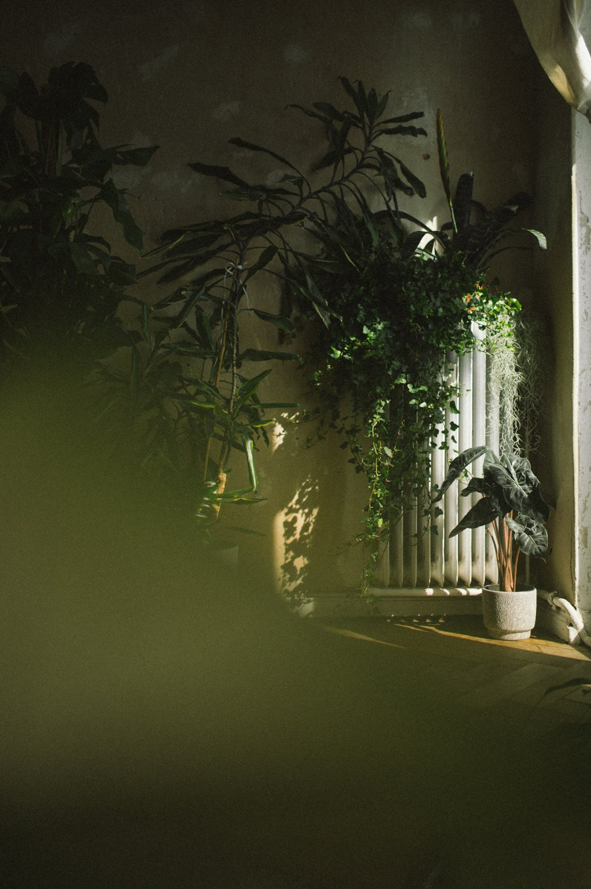
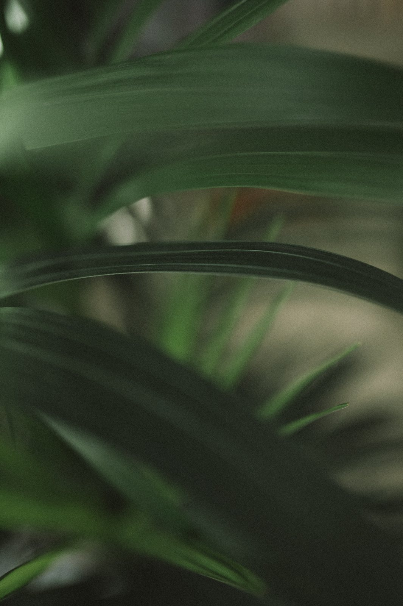
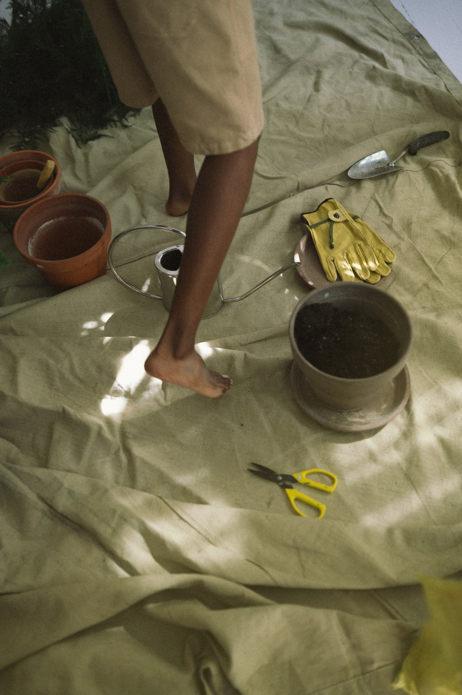
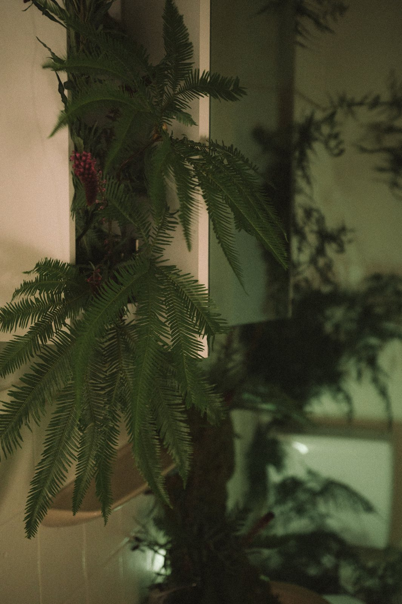
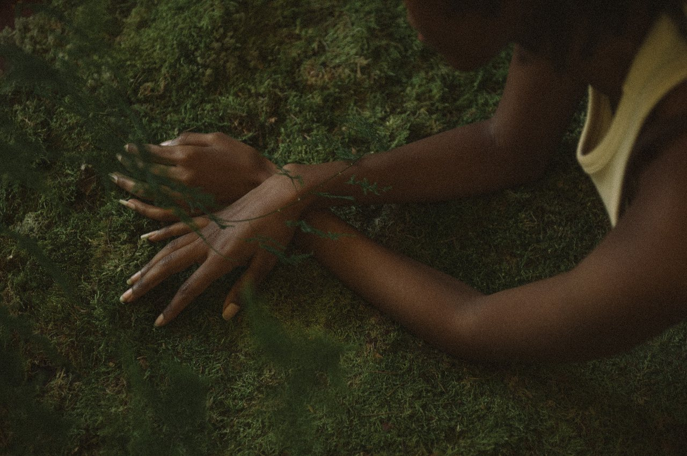
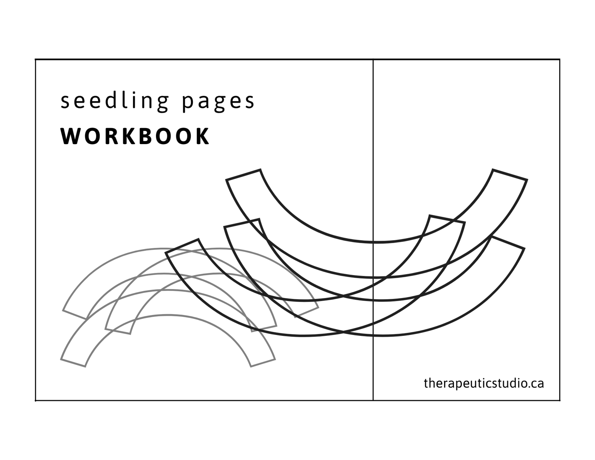

Therapeutic StudioA paper practice
A paper practice, where the seed is the other body. Therapeutic Studio works with the natural world as company for what we feel: not as a symbol for it, but as a body that has been through something like it, for far longer than we have. A seed can spend years looking as though nothing is happening, and when it does begin, its first act is to send a root further down into the dark. Here, we colour a page, fold it into a small box of soil, put it in the ground with a seed inside, and let the seed keep our feelings company.

Other bodies of the natural world are not metaphors for what we feel. They are sites of wisdom. Each has been doing something structurally like a human emotion for far longer than there have been humans to feel it, and sitting with what it actually does can make your own version of that emotion easier to be with. Not easier to solve. Easier to keep company with.
The seed belongs in that company for the stretches when nothing shows. Germination happens wholly out of sight: water gets in, and a root pushes down into the soil before anything rises. Some seeds stay shut through every condition they are said to need, held back by something in their own bodies until a winter has passed over them. From the surface, a seed that is beginning and a seed that is waiting look the same.
People go quiet like that too. Months go by with no event to report, and when someone asks how we are, we say fine. The seed proves nothing about us. It makes me slower to say what I am looking at, in myself or in anyone else.
Each page is its own. What you make goes into the ground, and you can’t check on it. Nothing is kept for display, judged, or performed. What stays with you is a strip of colour from each page, and in time a small woven square of them.
This is an invitation, peer to peer. I’m not a botanist. I learn about seeds as I go, from the research and from people who know the ground where I live, and I’d ask you to do the same where you live. You don’t need to know anything about plants or drawing to begin. You need a printed page, whatever colour you have to hand, a little soil, and a seed that belongs where you are. The longer version of why is in the essay, The Root Goes First.

The making here is done on plain paper: a printed page of lines, and whatever you have to colour it. The lines came from plants I live beside. I photographed each one, and then followed only the spaces between its leaves, nearer and nearer again, until I was too close to say what I was looking at. What is left has no name, and there is no right way to fill it.
The paper is chosen for what happens after. Plain, uncoated paper softens in damp soil and breaks down, so the box can go into the ground with the seed inside it and become part of the bed. Coloured pencil and watercolour go with it. Acrylic, permanent marker and wax crayon don’t break down the same way; if you used them, lift the seedling out when you plant it and keep the paper.
So this isn’t colouring in. You’re not trying to finish a picture. You’re following: letting your eye go where it has already gone, and staying with a line until the question of whether you are doing it well falls away. When that doesn’t come, stop. A page with one corner coloured is finished.
Four ways in

Ten printable pages of lines and no words, each drawn from the spaces between a plant’s leaves. Choose one, or print all ten.
See more
From page to box, by hand. Eight pictures for folding a coloured page into a small box of soil and sowing a seed that belongs where you live.
See more
What stays with you. The strip from each page, woven over and under into a small square of colour with no picture in it.
See more
The essay. A seed in the palm, a date seed from Masada, and what happens underground before anything shows.
See more
A companion workbook for Seedling Pages: the folding and weaving pictures, all ten pages, and an empty frame for your weaving, every sheet printing the same way on Letter paper. Nothing to complete. Print the pages you need, and begin with whichever one your eye goes to first.
Download the workbookWhat this practice is not. Seedling Pages is a creative health practice, not therapy. It is not a diagnostic tool, an assessment, or a replacement for professional mental health support. If you are working with difficult feelings and would like more support, please reach out to a qualified therapist or counsellor.
If you are in distress, please reach someone who can help now: in British Columbia, 310-6789 (no area code); anywhere in Canada, call or text 9-8-8.